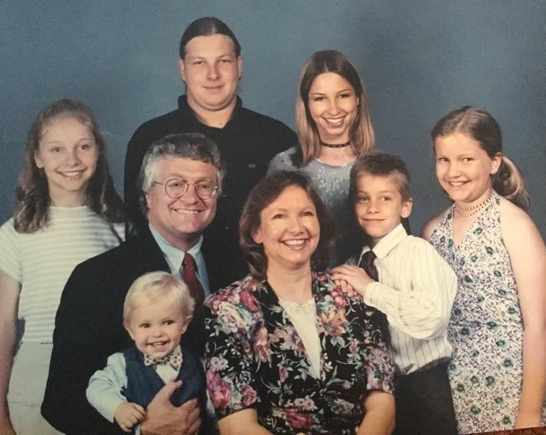
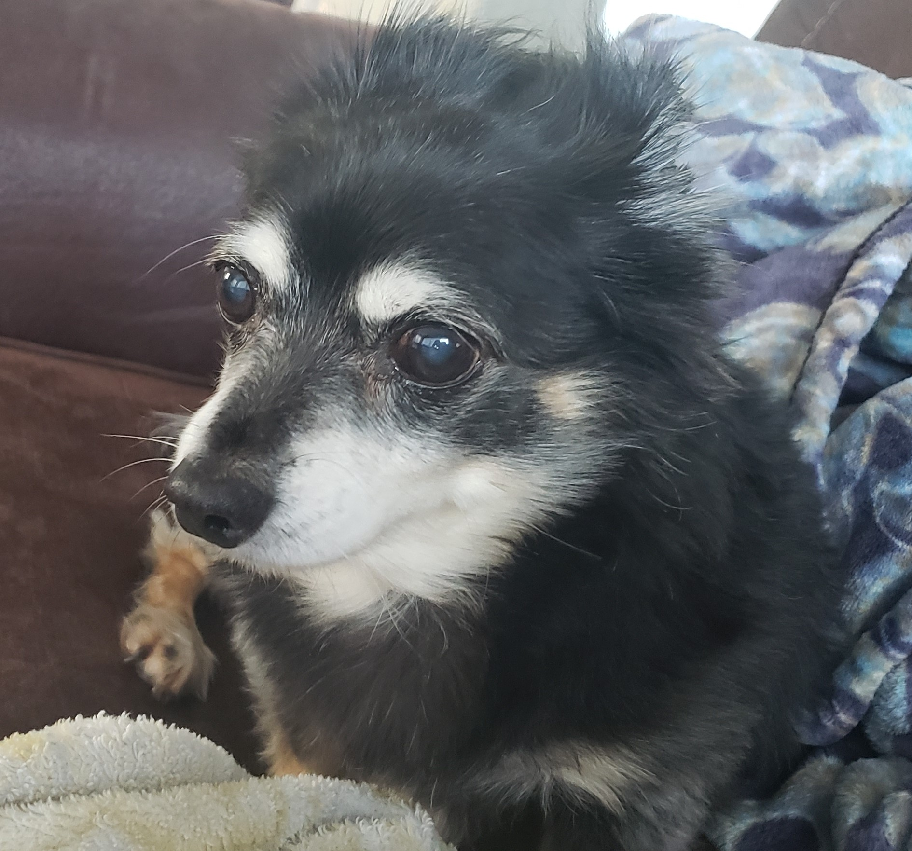

I was born and raised in Anaheim, California. I've had an interest in robotics ever since I was in kindergarten, when my parents got me a remote-controlled robotic toy for Christmas. I've always wanted to design and create mechanisms that make life easier and enable people to accomplish entirely new feats.
I was born January 3rd, 1996, to Barry and Lauren Gauthier. The youngest of 6 siblings, I've spent my entire life in Anahiem, California. From a very young age I've been intensely interested in robotics. Originally intending to become an inventor, when I realized the stability and infrastructure available to an engineer would best fit my interests, I decided to start pursuing it.
Attending Canyon High School, I deeply enjoyed my Chemistry and Physics classes and picked up some AP Credits, which were transferred to Fullerton College. At Fullerton, I tried to cover all my bases and ended up with a ton of units, mainly GEs, while I was following their engineering tract. I deeply enjoyed many of my classes at Fullerton as well as my time on the Speech and Debate team.
I ended up transferring from Fullerton College to California State University, Fullerton, where I immediately joined Titan Rover and pursued my Bachelor of Science, Mechanical Engineering degree alongside a minor in Computer Science.
I've now graduated from CSUF as of May 2020 and am now actively pursuing a career in automation and robotics. I'm always going to be curious, so I'm especially interested in opportunities that push me to learn and use my technical expertise to solve complex problems. I don't know what exactly the future will hold for me, but I'm going to pursue any direction that actively enables me to contribute to making smarter robots and mechanisms.
I've enjoyed the wonderful company of both my siblings, friends, and a variety of pets as I've grown up. Pictured is my dog Michael, who's been around since I was in the 5th grade. I love him to pieces.
Growing up, I spent most of my time playing whatever video game was the latest craze, getting close to semipro in a handful of them, looking up trivia or mechanisms on Wikipedia, reading Marvel comics, or doing general geek stuff.
Nowadays, beyond hanging out with close friends, I'm a big fan of competitive online gaming. I'm personally partial to DOTA2, but I'll play whatever the new hotness is. I have a deep interest in science and technology as a whole, so I often read up on mechanisms or phenomena through newsletters, Wikipedia, or otherwise often. I also love motors and magnets, and am always interested to learn more about them. I try to make it to the beach when I can, something made kinda difficult by the current pandemic.